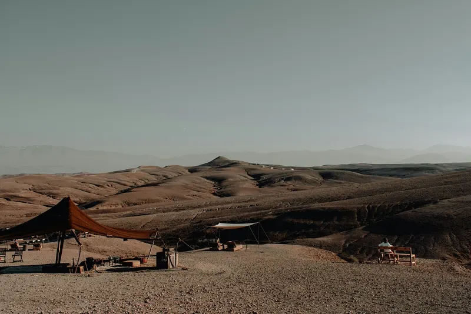

Les meilleures agences pour un séminaire au Maroc en 2027
Huit agences et DMC, avec leur spécialité, des références vérifiables et le type de client qui y trouve son compte, et les six critères de notre choix.

Les meilleures agences événementielles à Paris en 2027
Dix agences parisiennes, avec leur spécialité, des références vérifiables et le type de client qui y trouve son compte, et les six critères de notre choix.

Calculateur d'empreinte carbone d'un événement (gratuit)
Transports, hébergement, repas, lieu, décor : estimez l'empreinte carbone de votre événement avec les facteurs de l'ADEME.

Préparer sa soirée d'entreprise : la checklist gratuite (58 points)
La checklist gratuite pour préparer une soirée d'entreprise : jauge, lieu, déroulé, sans alcool, régimes, accessibilité, jour J. 58 points à télécharger en PDF.

Rétroplanning d'événement : le modèle gratuit, de J-90 à J+7
Le rétroplanning gratuit pour organiser une soirée ou un lancement : 38 étapes de J-90 à J+7, avec qui fait quoi. À télécharger en PDF.

Le modèle de brief : les 10 questions avant d'appeler une agence événementielle
Le modèle de brief gratuit : les 10 questions à se poser avant d'appeler une agence événementielle, avec exemples de bonnes réponses. En PDF à remplir.

Organiser un séminaire au Maroc : le guide gratuit 2027
Le guide gratuit pour organiser un séminaire au Maroc en 2027 : saisons, ramadan et fêtes, villes, riads, vols, formalités, alcool et usages, checklist. En PDF.

Le kit voyage de presse : modèles gratuits (invitation, programme, suivi des retombées)
Le kit gratuit pour organiser un voyage de presse : trame d'angle éditorial, invitation journaliste, programme jour par jour, kit média, suivi des retombées. En PDF.

Calendrier 2027 des temps forts pour caler un événement (France et Maroc)
Le calendrier 2027 gratuit pour caler un événement : jours fériés et ponts, vacances scolaires, Fashion Weeks, salons, Festival de Cannes, ramadan et fêtes au Maroc. En PDF.
Soirée de fin d'année d'entreprise à Paris : 8 idées pour vos équipes
Dîner, bal, club de jazz, chalet sur les toits, croisière, trophées, brunch des vœux, et le calendrier pour réserver à temps.
Un événement dans un riad à Marrakech
Privatiser un riad, dîner dans le patio, accès par la médina, saisons et alcool : notre guide.
Privatiser un rooftop à Paris
Types de toits, adresses emblématiques, plan B météo, contraintes et calendrier pour privatiser un rooftop.
Lancer une collection de lunettes de soleil dans une station-service rétro
Station-service rétro, lunettes au comptoir, jerrycans à la marque, photocall dans la station de lavage et after au coucher du soleil.
Lancer un parfum dans un bar à cocktails
Bar privatisé, carte où chaque parfum devient un drink, bartenders-nez, dégustation olfactive et after.
Lancer une collection de bougies dans un vidéoclub
Vidéoclub vintage, parfums rangés par genre, carte de membre, séance popcorn et Reels.
Un événement de marque que les invités postent
Concept lisible en une image, photocall réussi, lumière pour smartphones, surprise filmable et plan de contenu.

Un séminaire à Marrakech en 3 jours
Accueil au riad, rooftop dans la médina, plénière dans un palais, team building et soirée à Agafay.
Lancer une collection de mode dans une laverie
Laverie privatisée, hublots en vitrines, défilé entre les machines, tickets de pressing et DJ set.
Lancer un café derrière une cabine téléphonique
Cabine rouge, bar à café caché, invitation par appel, dégustation façon standard et after.
Lancer une collection de chaussures chez un cordonnier
Atelier de cordonnier, ticket de réparation, personnalisation sur place et bar à cirage.
Lancer une collection de mode dans un bowling
Bowling rétro privatisé, défilé sur les pistes, chaussures customisées, tournoi entre invités et soirée néon.
Lancer une collection sport dans un club de tennis vintage
Club de tennis vintage, tenues blanches, mini tournoi, citronnade au club-house, Reels et after au coucher du soleil.
Lancer un produit food dans un kiosque à journaux
Kiosque parisien investi, fausse une, emballage papier journal, dégustation du matin et Reels.
Lancer une gamme de skincare dans un hammam
Hammam privatisé à Marrakech, rituel revisité, atelier ingrédients, dîner sur les toits et Reels.
Lancer un produit cosmétique avec des fruits et des légumes
Pop-up marché, reveal dans les fruits, bar à jus, atelier sensoriel et Reels.
Si nous devions organiser un mariage demain : 5 idées cool à piquer
Drapés, tables en fruits et légumes, cinéma noir et blanc, tout perso et tiramisu en coupe.

Se marier à Marrakech : le guide complet
Riad, palais, Palmeraie ou désert d'Agafay : saison, lieux, format sur trois jours et partie légale.
Quel budget prévoir pour une soirée d'entreprise à Paris ?
Budget par invité, prix du lieu, du traiteur et de la technique, et un exemple chiffré pour 150 personnes.

10 lieux exceptionnels pour un événement corporate à Paris
Du Palais Brongniart à la Piscine Molitor, notre sélection des adresses qui transforment un événement en moment inoubliable.

Les 7 tendances événementielles de 2026
IA, formats hybrides, écoresponsabilité : ce qui change (vraiment) dans notre métier cette année.
Organiser un voyage presse réussi en 7 étapes
Du brief initial aux retombées médias : le playbook pour transformer un press trip en couverture éditoriale.
Organiser un événement à Cannes : les plus beaux lieux de la Côte d'Azur
Palais des Festivals, villas des hauteurs, yachts privatisés, vieux Cannes… Les décors d'exception de la Riviera.
Organiser un événement au Maroc : la destination qui change tout
Marrakech, le désert d'Agafay, riads privatisés, Essaouira… et la force d'une DMC locale qui change tout.